Faculty of environment
Introduction
Over my 4-month co-op term, I worked with the Faculty of Environment to create engaging content and diverse media to promote content related to sustainability and the environment to prospective students. This role was ideal for me, as it allowed me to explore various disciplines and forms of media.
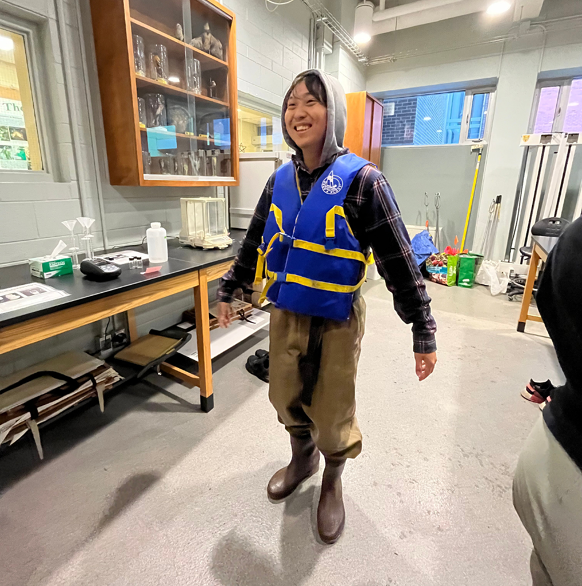
Highlights
Visit the website here.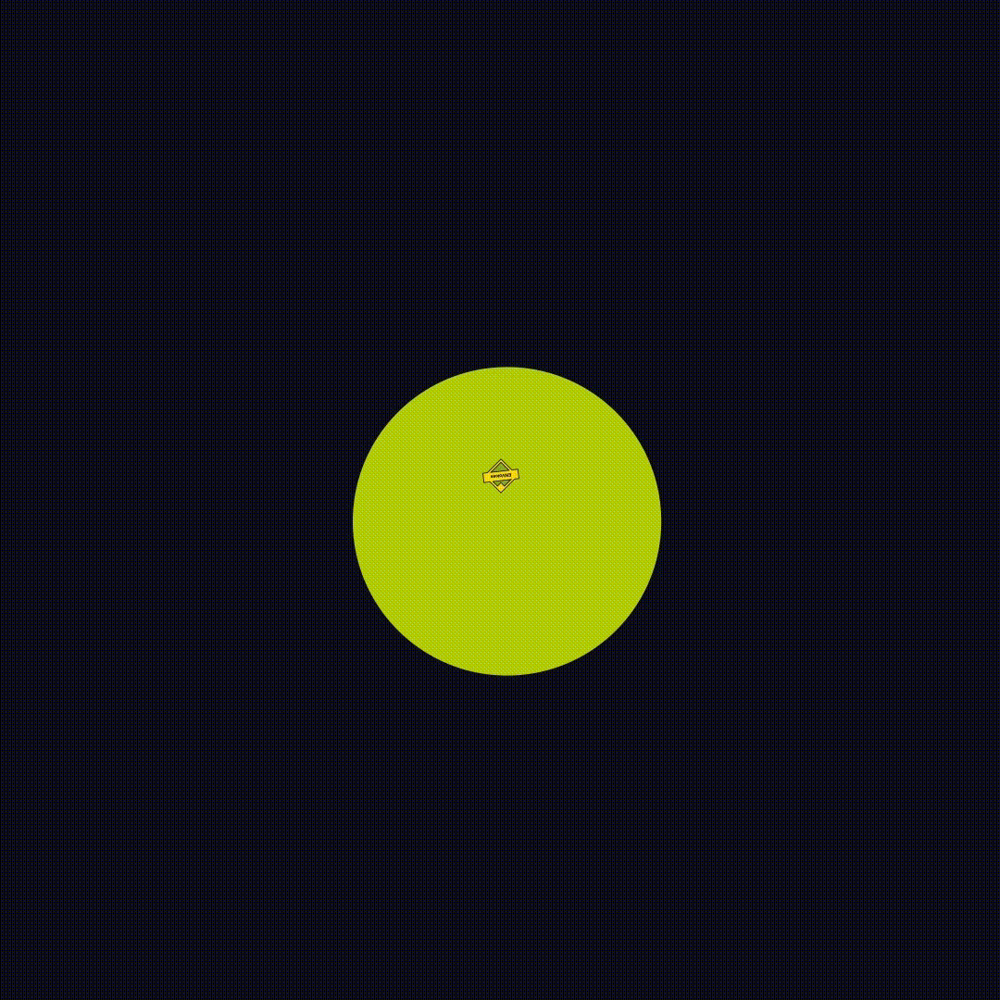
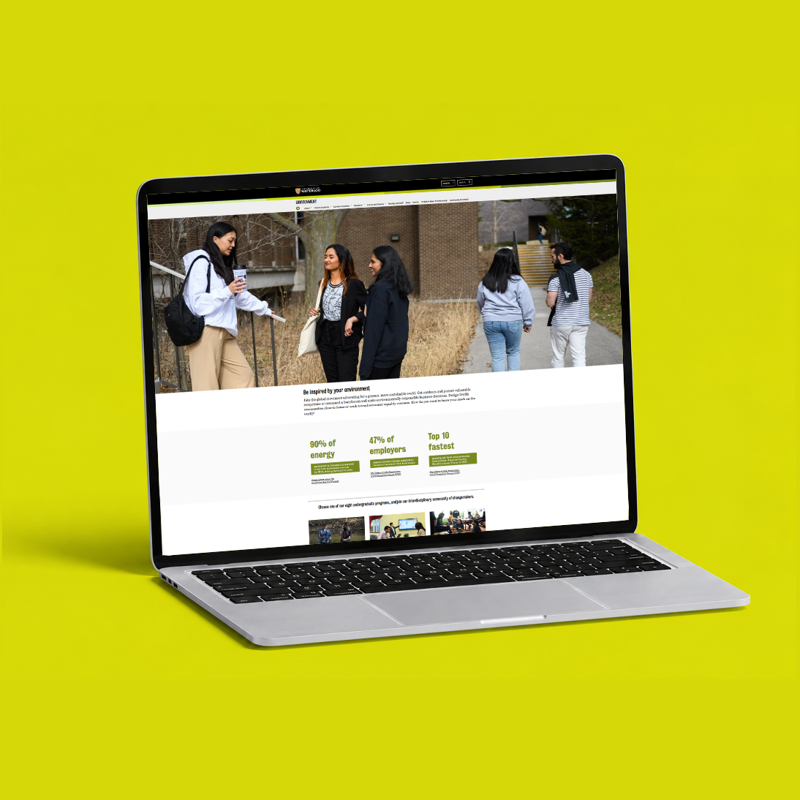
Some motion graphics I made for the social media series. I took every opportunity to be original and I made the most of it XD.
The mission
The redesign was driven by a need to increase user retention and better engage prospective students. The existing website was heavily text-based, making it difficult for users to quickly navigate and connect with the content. My role was to create a stronger balance between visual communication and information by using the university's existing resources to refresh the current websites and develop new pages that aligned with the university's mission and visual identity. The goal was to create a more engaging, accessible, and visually cohesive experience that could attract and retain prospective students.
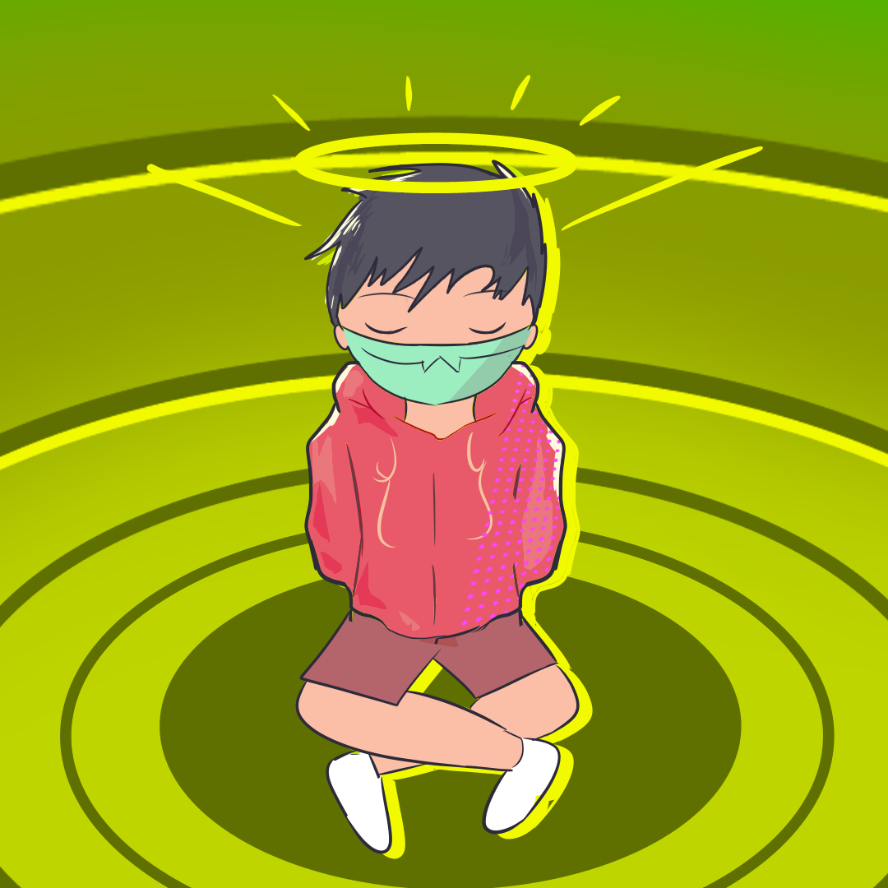
Guidelines
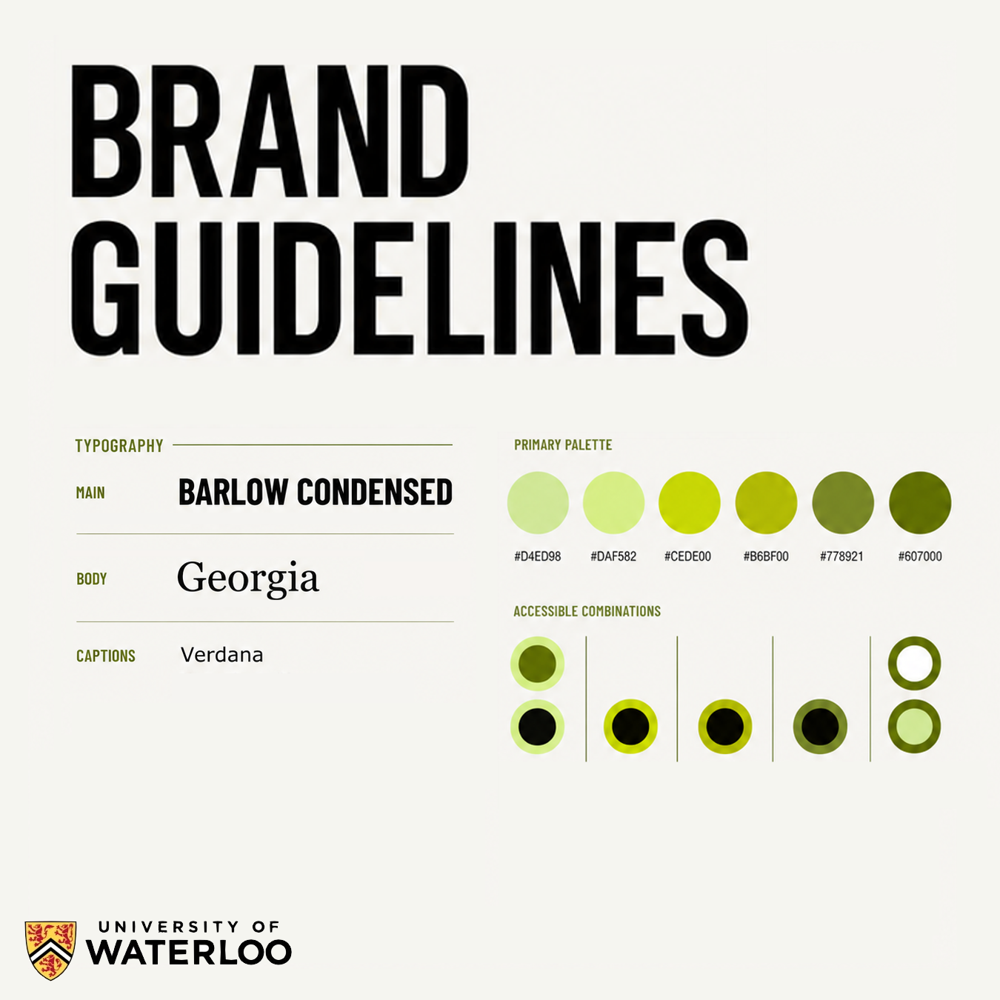
Brand guidelinesThe environment faculty's brand guidelines also called for consistent use of a variety of greens. Cause you know...it's the environment faculty.
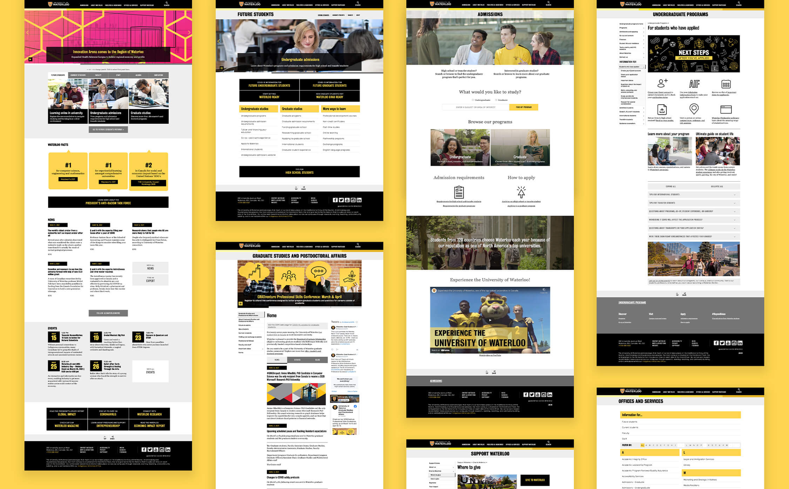
WCMISAll Waterloo pages run on WCMIS (Waterloo Content Management System). Which is the university's own version of WordPress which limits layout to a set of pre-approved templates and components in order to achieve consistency among Waterloo websites no matter which intern is building it.
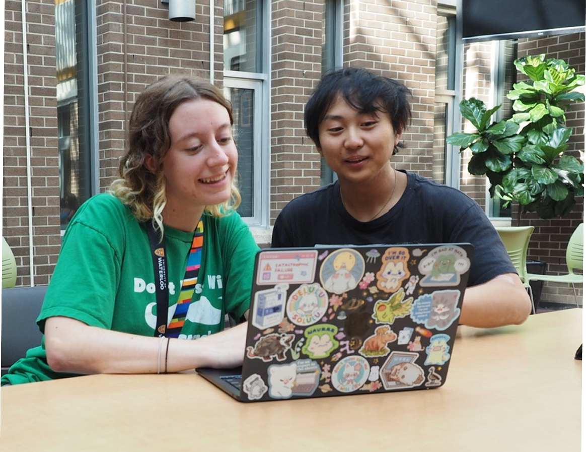
Student and advisor approvalFor the website redesign to be considered a successful improvement, each iteration needed to be validated through feedback from both my advisors and fellow students. Using feedback from these stakeholders to evaluate the clarity, visual hierarchy, usability, and overall effectiveness of each concept.
Process
Each design iteration followed the same process. I started in Figma, sketching several rough prototypes, then brought them to the student body for feedback. Once I settled on a direction, I built the final website in WCMIS.
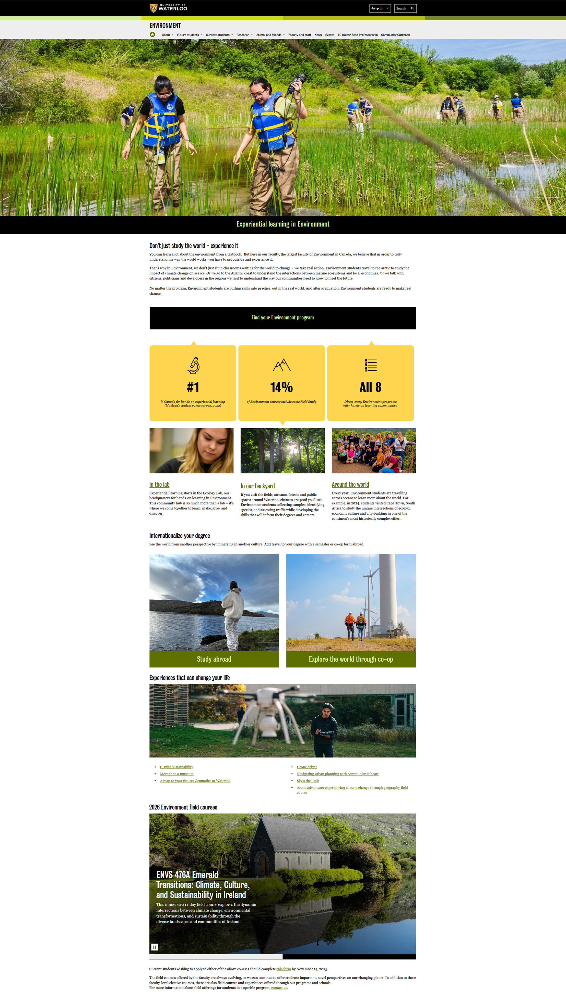
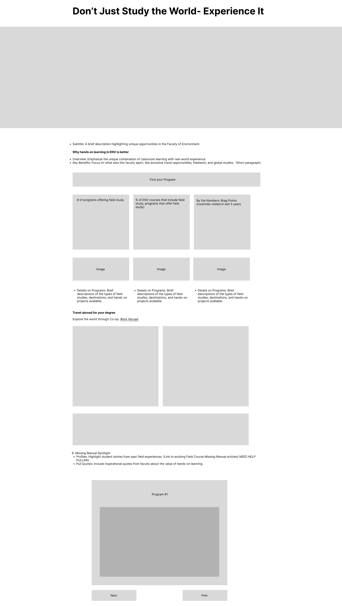
Design validation
A majority of the redesigning involved replacing text heavy sections with more visually engaging elements.
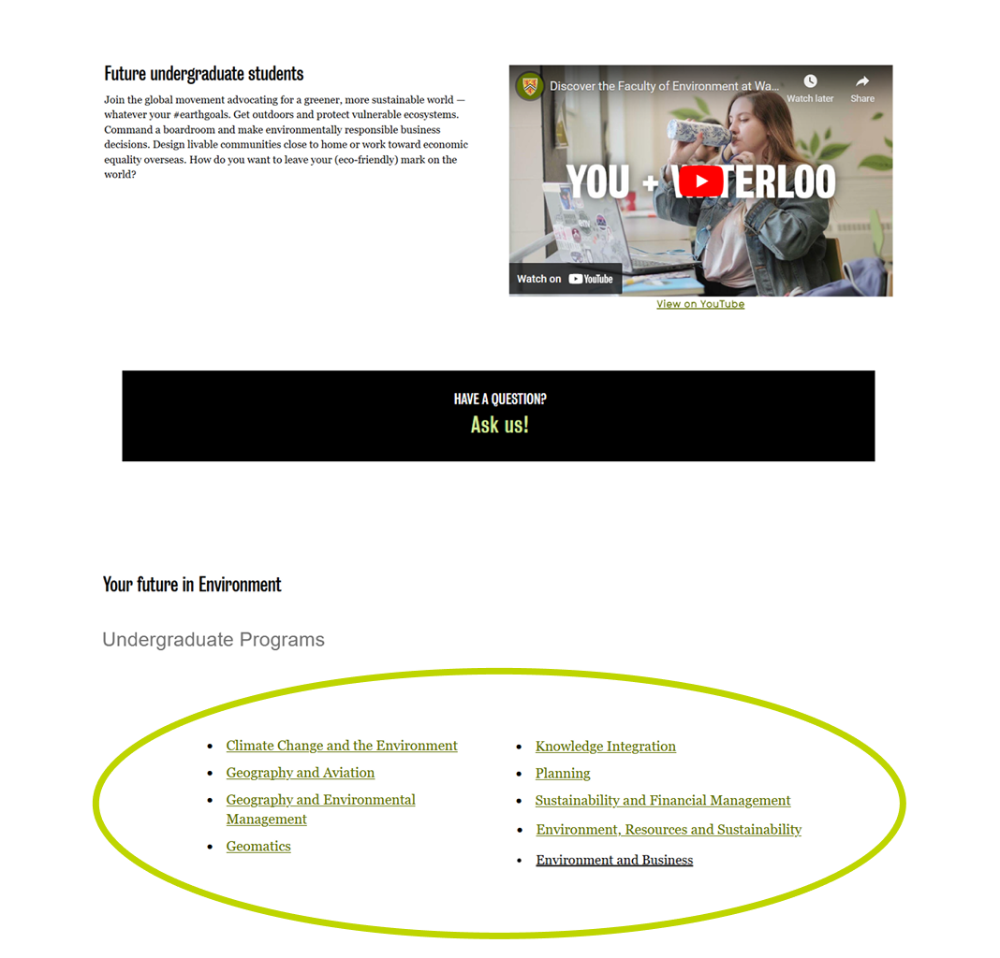
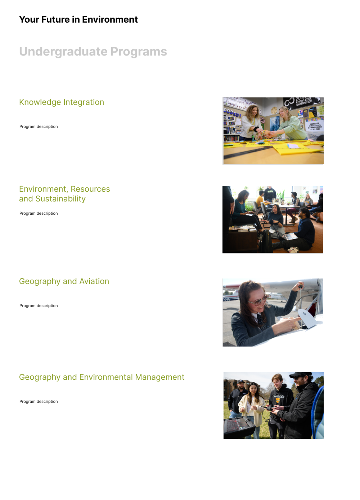
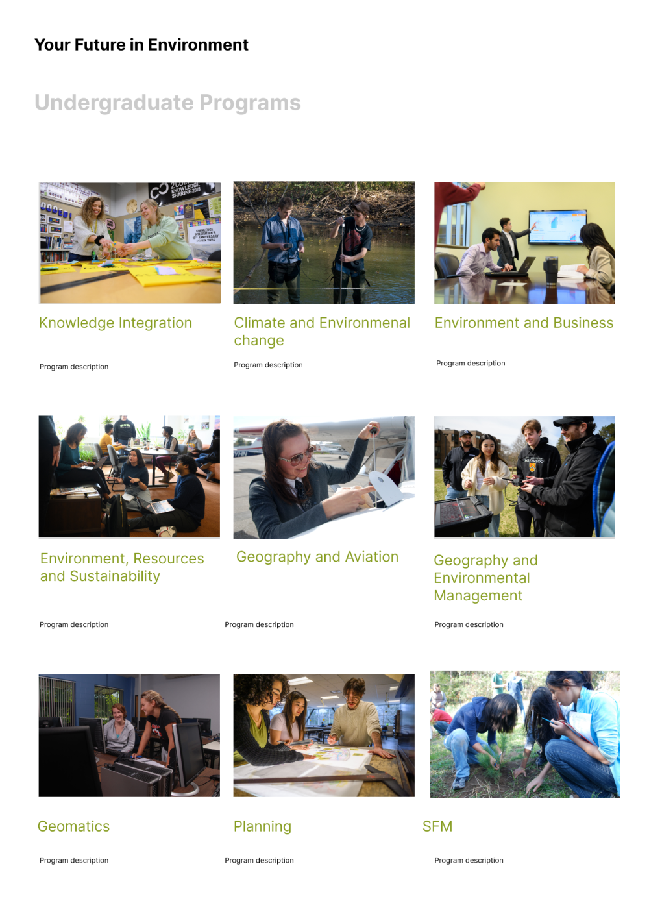
Opinions from my advisor and other students:
“This takes longer to scroll through which could affect user focus”
— advisor
“I prefer this one because there's more breathing room”
— a student
“Looks nice”
— my mom
“I like this one because it takes up less space”
— my advisor
“I feel very overwhelmed looking at all the options”
— a student
“Looks nice”
— my mom
Marketing: Social media campaigns
Alongside building websites, I produced a series of social media posts for the Faculty of Environment's Instagram to promote student life in the faculty of environment.
Visit the instagram page hereENVoicesThe ENVoices series amplifies the voices of the Faculty of Environment's student body, showcasing their perspectives on their respective programs. Each interview features a student from a different program within the Faculty of Environment, exploring questions such as: what inspired you to choose your program? What are the courses like? What career opportunities do you envision after graduation?
What Goes On In A LabThe most exciting and engaging series I've created! In collaboration with my co-workers, we embarked on mini field trips to film the inner workings of a lab. This series offers prospective students a glimpse into the lab environment, showcasing what coursework might look like through engaging visuals and thoughtful insights.
Enviews / The ScoopWhat better way to learn about the student body than by connecting with them in person! The Scoop / Enviews was another ongoing series where my communications assistant and I interviewed students to create more community-focused content. This ambitious project pushed the boundaries of our ideas and helped me step out of my comfort zone.
My takeaways
Communicate EVERYTHING
Collaborating with others has helped me realize how much I value having detailed information on changes, as it enables me to begin making updates much more efficiently.
Ask The Right Questions
While I interviewed students for ENVoices, I realized that content was very important. Being proactive and writing down what you want to say and even what you want to HEAR is quite important.
Consistency is key
A company's brand is very important in determining its visibility and helps users remember you. One thing's for sure — I remember the 3 shades of green this faculty uses.
Always be ready to adapt
At work, I often encounter situations where I need to scrap existing ideas and content and start over from scratch.
Next project
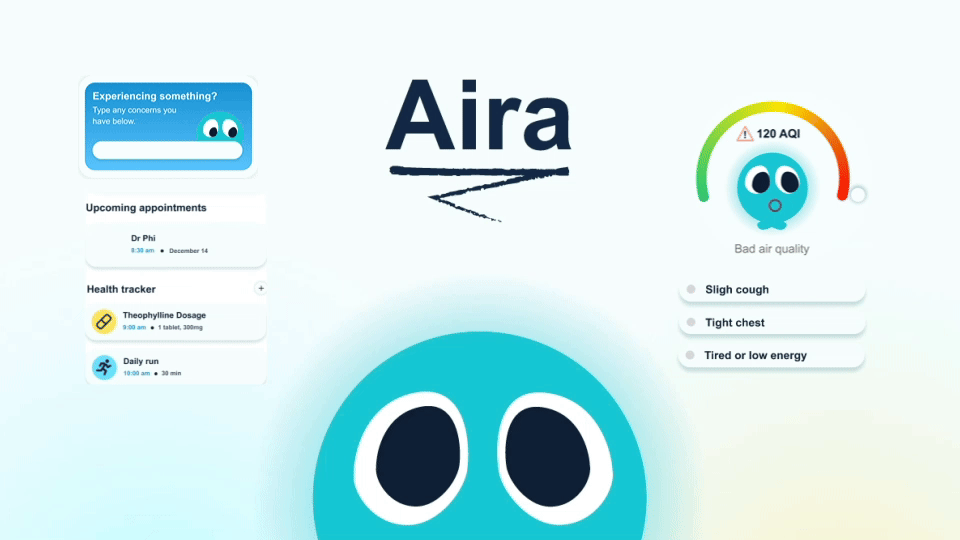